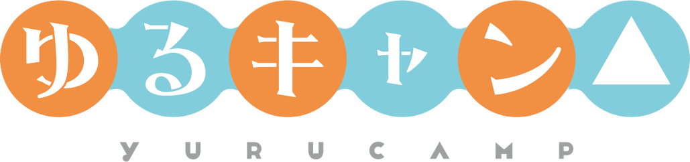
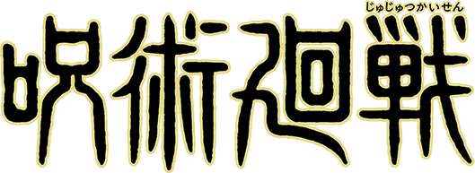
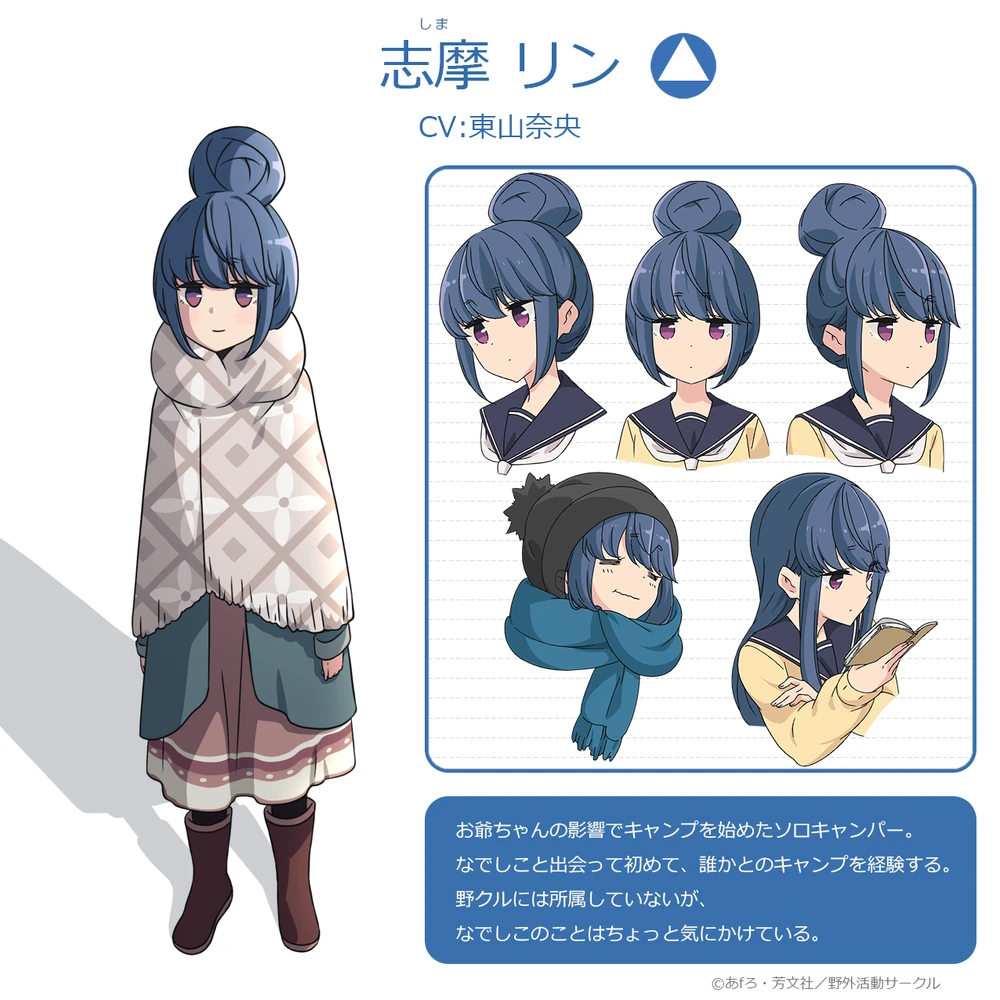
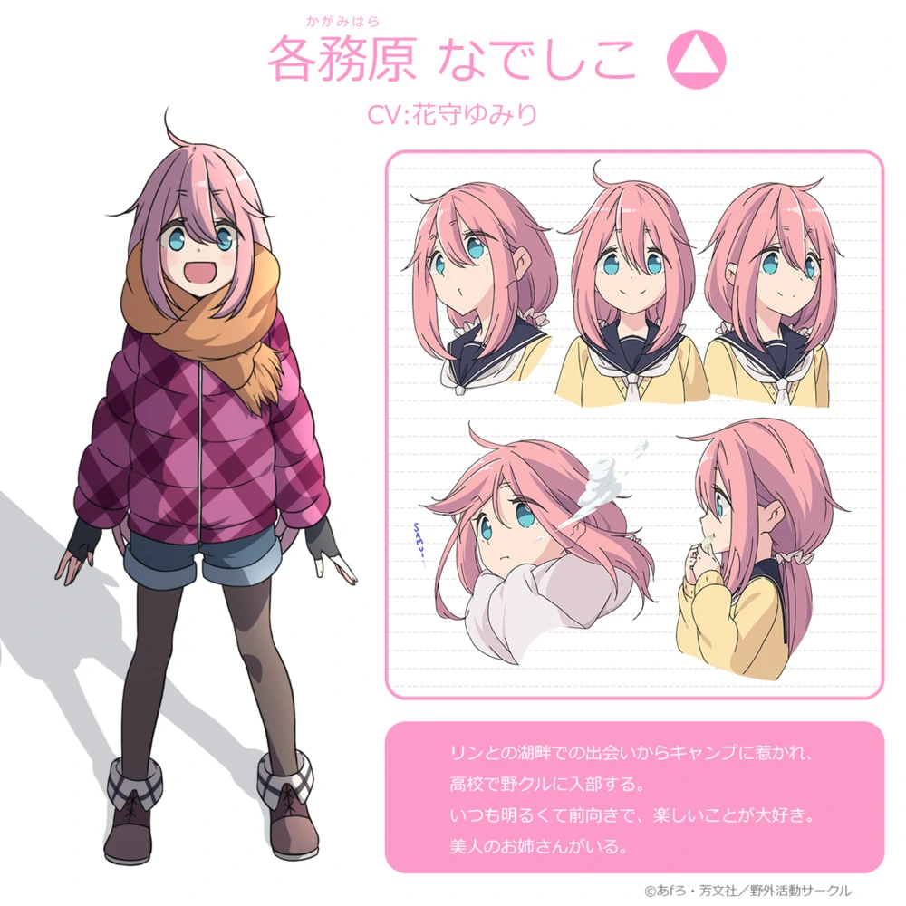
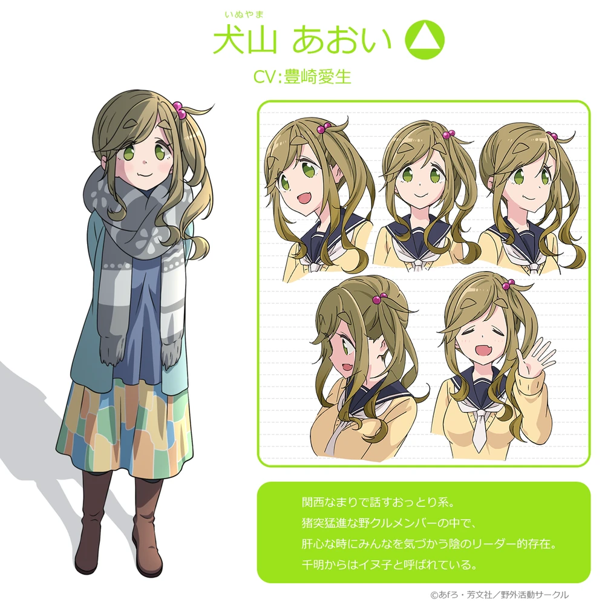
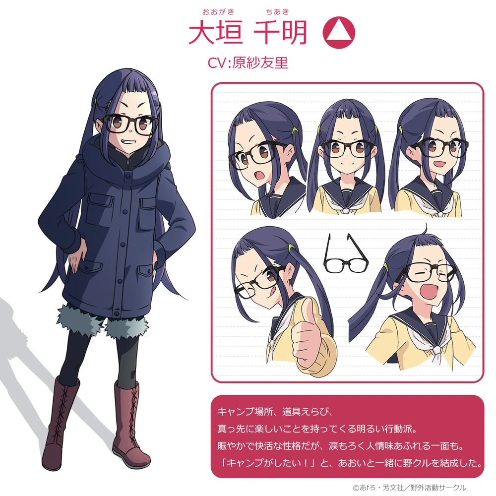
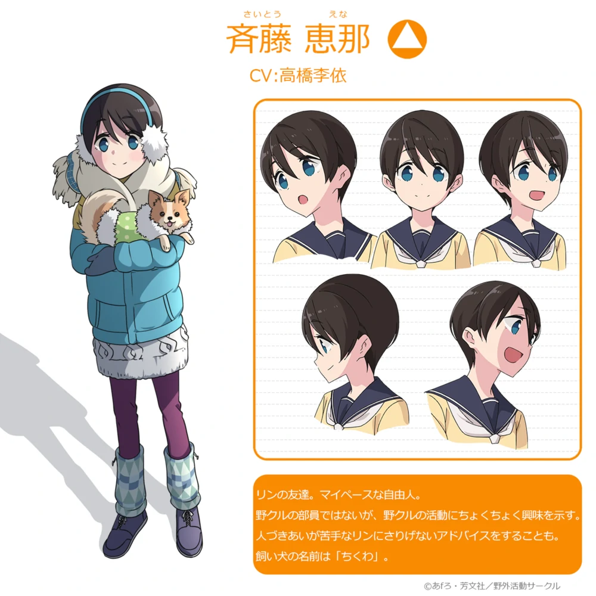

 |
本作主角之一，16歲，10月1日生。身高推斷在145cm以下，有著和小學生沒兩樣的體型，深灰藍色頭髮及腰並時不時會紮成一個很大的丸子。紫曈。喜歡狗。 本棲高中的圖書委員，不論在校內還是露營時都會看書，打工的地點也是書店。雖然表面是個面癱，但內在情緒十分豐富，經常會吐槽周遭的人和事。 |
 |
本作主角之一，3月4日生日。一個天真爛漫開朗樂觀的女孩。粉紅色長髮綁成雙馬尾，藍曈。言行有點像狗，害怕血、暗處和鬼怪。 溝通能力很高，面對初次見面的人也能毫無顧慮地與其對話。不過在她與凜的相處下能看出，其實也是會拿捏與溝通對象間的距離感。 |
 |
最初與千明一同創立野外活動同好會的成員，3月4日生日。把亞麻色頭髮綁成單側馬尾，綠曈。有著大姐姐般平靜的性格，外貌特徵為犬牙和三角形的粗眉毛。語調帶有關西口音。被千明稱呼為「犬子」。學業成績是野外活動同好會成員中最好的一個。很愛吹牛，吹牛時會露出很浮誇的眼神。 |
 |
本棲高中「野外活動同好會」的社長，8月31日生日。一名享樂主義的行動派女孩。紫髮棕曈，戴眼鏡並束著雙馬尾。在漫畫第54話時由惠那操刀，把頭髮剪成了及肩頭髮。 被撫子和葵分別稱呼做「小明」和「明」。聖誕露營前被凜稱呼做「大垣」，聖誕露營過後因變友好了而改口成「千明」。 |
 |
凜在學校的朋友，9月1日生日。黑色短髮，藍瞳。經常使用SNS與凜聊天。常常過著晚睡晚起的生活，曾經試過一天睡了14小時後又爬回床上睡覺。 對露營有一點點興趣，千明希望以她加入野外活動同好會為契機引誘凜也加入，但因不想脫離回家社而婉拒了。 |
資料來源:
https://yuru-camp.fandom.com/wiki/Yuru_Camp_Wiki
https://zh.wikipedia.org/zh-tw/%E6%90%96%E6%9B%B3%E9%9C%B2%E7%87%9F%E2%96%B3